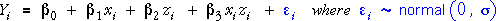

Testing for interaction
We end this section with consideration of a linear model in which variables
X and Z interact in their effect on Y.

As in all other general linear models, there are two approaches to hypothesis
testing.
- T tests
- It is possible to perform t-tests on the individual parameters of the
model. Each is based on a t statistic which is the ratio of the parameter
estimate and its standard error.
- F tests
- F tests are found from a sequence of models of increasing complexity.
The reductions in residual sum of squares from the successive models are
arranged in an analysis of variance table.
These approaches are illustrated in the following example.
Energy expenditure of bees
In an experiment, an entomologist recorded energy expenditure (joules/sec)
for bees drinking water with different sucrose concentrations (%) and at
different temperatures. We will test whether there is interaction between
sucrose and temperature.
- T test
- The top table shows the parameter estimates, their standard errors,
t-statistics and p-values. The p-values show the strength of evidence
for whether the corresponding parameters are non-zero.
- The p-value for the interaction term is 0.0013, giving very strong evidence
that there is interaction between the effects of sucrose and temperature.
- The other p-values should not be interpreted since it does not make
sense to drop the linear terms in sucrose or temperature when there is
an interaction in the model.
- F test
- An analysis of variance table is also shown. The p-value associated
with the interaction is again 0.0013, so the conclusion about the significance
of the interaction is the same.
- Since there is interaction, it again does not make sense to test the
linear terms in sucrose and temperature, so the p-value associated with
the linear terms should not be used.